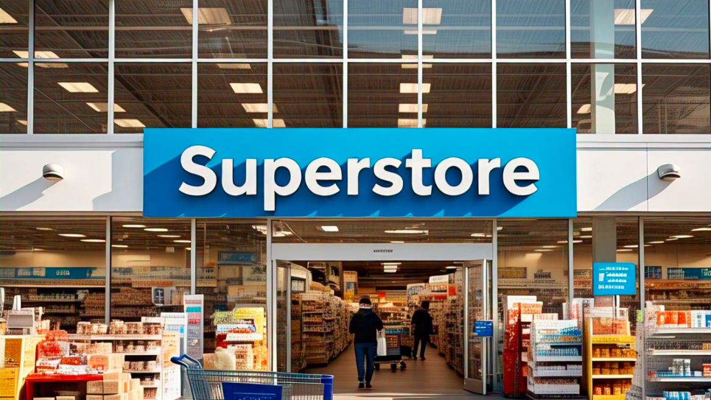
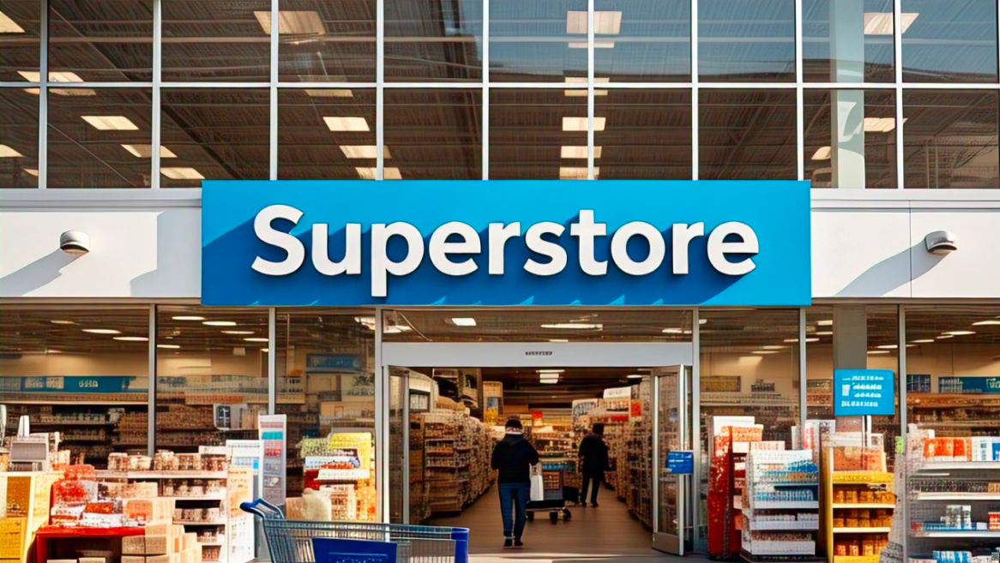
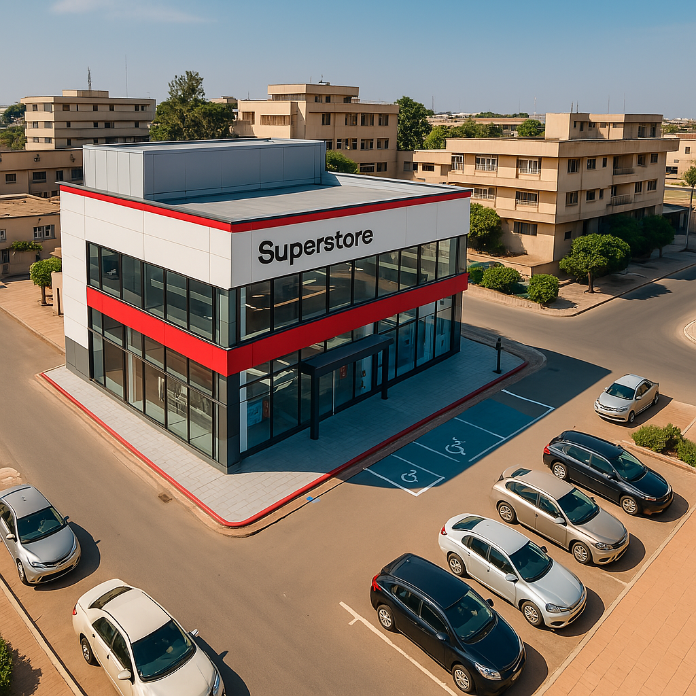
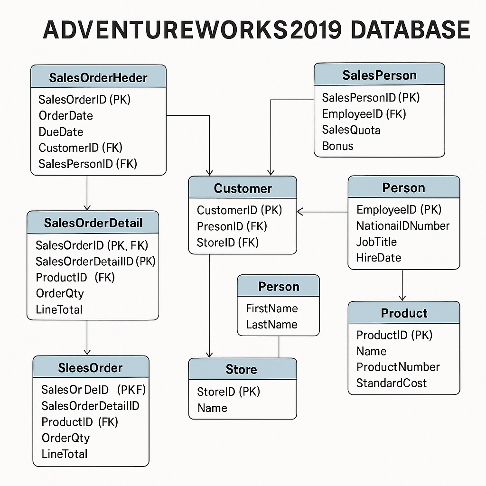

In this project, I used Excel to clean, analyze, and visualize sales data from International Breweries (2017–2019) across five West African countries, deriving insights and strategic recommendations to improve sales performance.
 

I structured raw Superstore Excel data into a star schema using staging, fact, and dimension tables in Power BI. By establishing relationships and creating DAX measures, I laid the groundwork for insightful data analysis.

I conducted a comprehensive analysis of Superstore's sales data from 2010 to 2014 using Power BI. The objective was to uncover patterns in customer behavior, product performance, seasonal trends, and regional sales to inform strategic business decisions.

I crafted SQL queries utilizing joins and subqueries on the AdventureWorks 2019 database to extract and analyze relational data across multiple tables

Performed exploratory data analysis on a movie dataset using Python libraries (Pandas, NumPy, Matplotlib, Seaborn) to uncover correlations between variables such as budget, gross revenue, and viewer ratings.